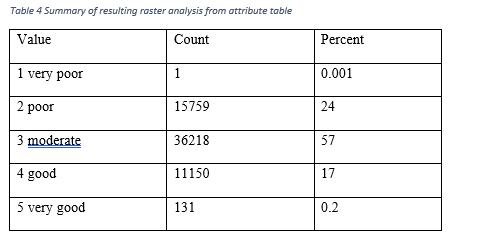
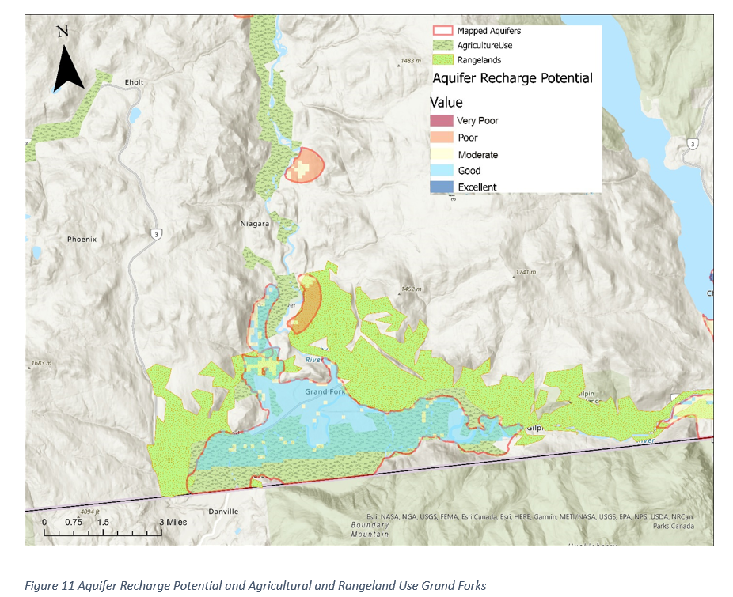
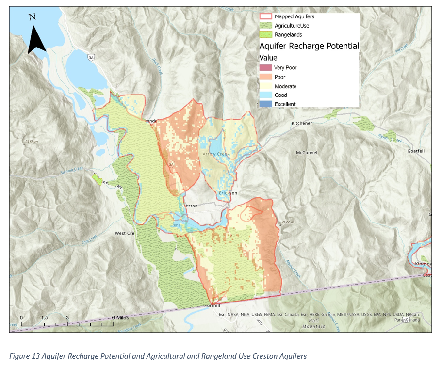
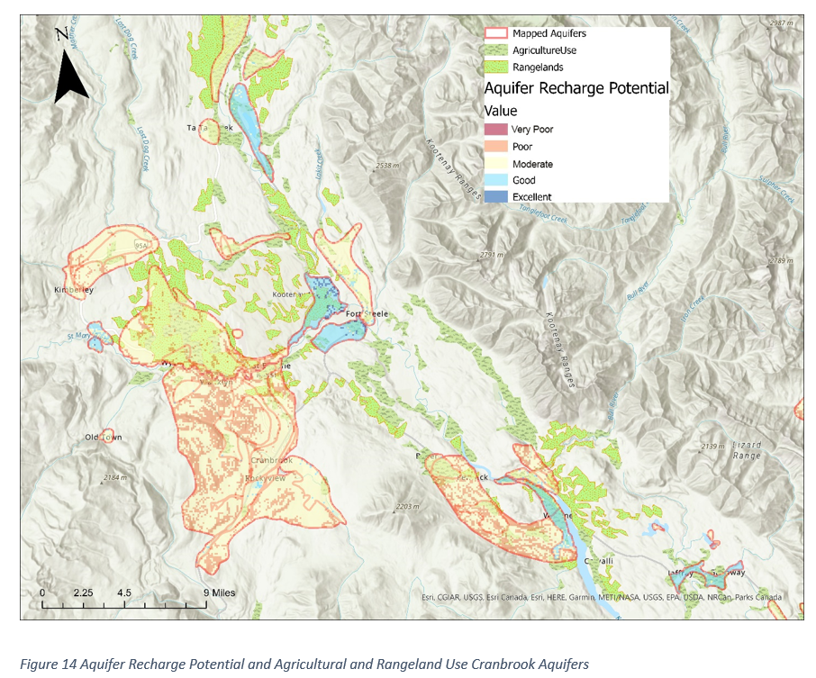

57% of the raster cells in the aquifers had a moderate recharge potential, 24% poor recharge potential, and 17% good recharge potential (Table 5). Both very poor and very good recharge potential have significantly smaller numbers, with 1 cell and 131 cells respectively.
The Grand Forks aquifer displays a mostly moderate recharge potential (84%), good recharge potential was much less (12%) and poor recharge potential was the least present (3.44%). Most of the Grand Forks area aquifers are overlaid by agricultural and range land use.
The Winlaw and Slocan aquifers display a range between poor(34%), moderate(35%), and good (31%) recharge potential. Furthermore, most of the aquifer from Winlaw to Lemon Creek is overlaid with agricultural use.
The Creston aquifers show a mix of good to poor recharge (Figure 14) with a higher count of moderate (40%), and similar counts of poor and good recharge (29.27% and 29.79%).
The Cranbrook aquifers show a mix of moderate to poor recharge (Figure 14). This aquifer has the highest variability of potential from the 4 aquifers highlighted in these results.
The resulting website and webmap work as intended, and I believe it creates a useful place for people to learn more about aquifer recharge, groundwater, agriculture, and climate change. Thoughts?